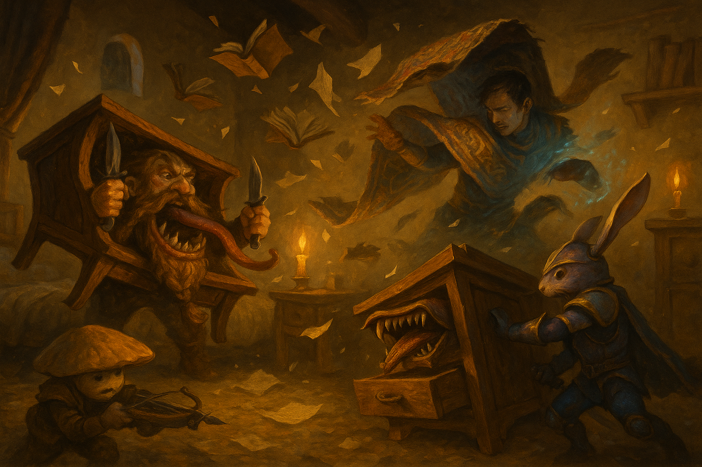

The Vanished Scholars¶
August 11, 2026
Overview¶
In the smoking aftermath of the assault, the party was led into the Jade Pyramid to report to Empress Serenity's council, where the rescue of the abducted priestess Naivara Tidewoven became Prance's sworn charge — and the University let slip that four of its brightest students had vanished in the chaos. Following that trail to the students' sealed dorm, the party tripped the missing diviner's trap: a mimic, a swarm of animated books, and a smothering rug that very nearly finished what the invaders had started.
Key Events¶
- Into the pyramid. Dalen Marr and the hooded drow Velra led the party through a blood-keyed door and the Jade Pyramid's illusion-warped halls — corridors that fold and mislead — to the Empress's war room.
- The council. The party met the city's powers all at once: Empress Serenity and her Goliath bodyguard Horace Steelwinter; the wine-soaked Salvatore Danilo of the Lucky Scorpion; the arena-owner Tirakar Sun; the Bazaar's Tisk Tisk; the University's Seris and Raasha Vaad; the Iron Holds' orc Gorvak Skybinder; and the guard leader Karza Sunhorn. Prance introduced the party with a booming flourish ("magnificent by necessity — now bow") and was immediately, publicly humbled by the Empress.
- The charge. With the amulet whispering in his ear, Prance accepted the Empress's commission to bring Naivara back — "by blade and by my oath." The party won a guard escort in Krum; Adarius was promised a full University scholarship and a better home for his parents; and the Empress laid bare the stakes: without Naivara sanctifying the water, the dwindling supply turns deadly, and the attack's timing — on the eve of the Festival of the Four Currents — looked deliberate.
- Four students gone. Pressed by the Empress, Seris and Raasha Vaad confessed a buried worry: four gifted students who shared an off-campus dorm — Cassian (evocation), Celine (divination), Varicash (illusion), and Calus (conjuration) — had vanished without a trace, their rooms showing no struggle and no detectable magic.
- The University's dead. The party detoured to the University, still strewn with corpses, where Krum's battered uncle Holgren — who had lost some nine or ten students and fifteen guards — gave him a Gorgon-backed bronze mirror that revealed Krum's spectral Phantom self.
- The trapped dorm. The "empty" room was warded by Celine's anti-divination devices — which is why earlier searches found nothing. As the party investigated, the furniture came alive: a mimic disguised as a desk, a swarm of flying books, and a smothering rug, all but immune to the party's psychic and charm magic. A brutal, unlucky fight followed; Krum and Adarius both dropped unconscious and were revived, and the session ended mid-battle, the exhausted party finally poised to take its long-overdue rest.
Memorable Moments¶
- "Now bow." Prance's grandiose presentation of each companion in turn — "master of arriving precisely after the fight has begun" — capped by the Empress flatly telling him to speak when spoken to.
- Fizz with the Rizz. Fizz charmed a 26 out of the suspicious Velra, who answered by licking his blood off her ring-hand and later pressing a dagger to his throat: "you should not trust anyone, my dear mushroom — but I think you may be worth my time." He talked Horace out of a fistful of healing potions on another 26.
- The tango. Prance begged the festival's last dance and drew Horace Steelwinter himself, who — on a natural 20 — spun the rabbit-knight so hard he ended up tail-up on the floor while Prance flubbed his own step with a natural 1.
- A salty bedside manner. Prance treated uncle Holgren's wounds with an "old fey remedy" that turned out to be a fistful of salt poured straight into the gash.
- Death by furniture. Having survived mummies, suture flies, and fire mephits, the party was nearly wiped out by books and a rug — reduced at last to shoving a still-thrashing book into a drawer and holding it shut, then having Fizz decompose and eat the defeated volumes.
Open Threads¶
- Who took Naivara — and why now? The abduction, the timing against the festival, and the missing students increasingly look like one plan, not three.
- The four scholars. Why these four — one master of each school? Where did they go, and was the diviner Celine a victim or a conspirator, given the anti-divination wards and lethal guardians left in her own dorm?
- The Iron Holds' hand. A promised water shipment never arrived, and the Empress openly suspects Gorvak Skybinder's masters of striking to make the city dependent. Coincidence, or cause?
- Salvatore's offer. Salvatore Danilo whispered a job to Behnsun Payne — "I may have work for you." What kind?
- Loose in the city. Tirakar Sun's arena lost monsters and prisoners in the attack; they're still out there. And the deserter Charles Dammit remains unaccounted for.
- Krum's mirror. What is the Gorgon-backed glass, and what does the spectral double it shows portend?
- Velra and Fizz. Trust, appraisal, or a blade waiting to fall?
The Scene¶

It had been the longest day of their lives — eighteen hours of mummies and suture flies and fire that walked like men — and now, in a dead student's candlelit dorm, the furniture tried to finish them. The desk unhinged its jaw and a grey tongue lashed out to coil around Krum, hauling the dwarf off his feet and dragging him into a mouth that stank of old glue and acid; he sawed at it with both daggers and it only chewed harder. Books rose off the shelves in a fluttering swarm and dove like paper hawks, spines snapping shut on skulls, and a book — a book — cracked Behnsun across the head hard enough to drop him to one knee. Across the room the great jade-and-gold carpet peeled itself off the floor and reared up behind Adarius, and for all his humming and his blade-song footwork it caught him at last and folded him into its weight, wrapping tight until the world went dark and airless and his own heartbeat filled his ears.
Nothing worked the way it should. Adarius's shadow-blade sank into the rug and did nothing — psychic, wasted; Fizz's honeyed suggestions slid off inanimate paper that could not be charmed; his vicious mockery found a thing with no mind to wound. They were scattered to the four corners of a room barely wider than a hallway, each pinned to a different horror, unable to bring their fire to bear on any single one, and the dice ran cold as the grave — miss after miss after miss while the natural twenties fell like rain on the other side of the table. Krum went down. Adarius went down. Prance emptied the last of his lay on hands into the dwarf's chest to drag him back from the edge, then turned and, out of options and dignity both, simply grabbed the book savaging him, wrestled the snapping thing across the room, and stuffed it into a dresser drawer, sitting on it to keep it shut.
When at last the final volume gave up its stitched-together life, the room fell quiet but for torn pages settling and five heroes wheezing on the floorboards. Fizz looked at the shredded rug, the split desk, the drift of ruined books, and — being a mushroom, and past caring — set about decomposing them, urinating on the lot and then eating what was left, spores and all. Somewhere in the wreckage was a soft bed with his name on it. They had survived the sack of a city and the monsters that sacked it; they had, very nearly, been killed by a library. "Hope y'all had a good time," the room seemed to say, "despite getting your ass whooped by furniture." They found the beds, and they slept.